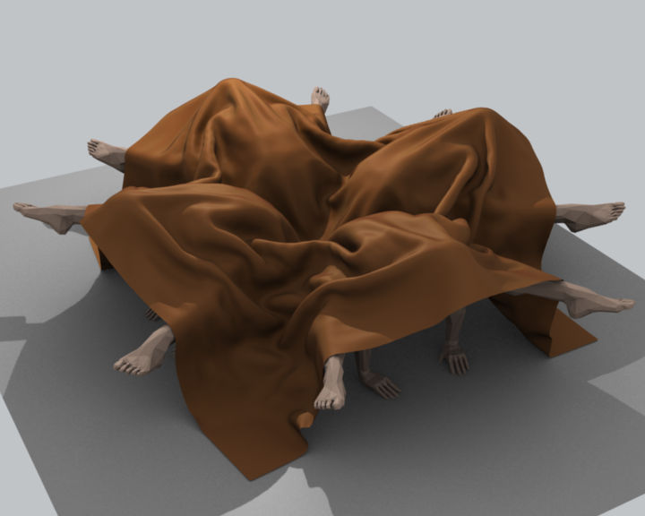
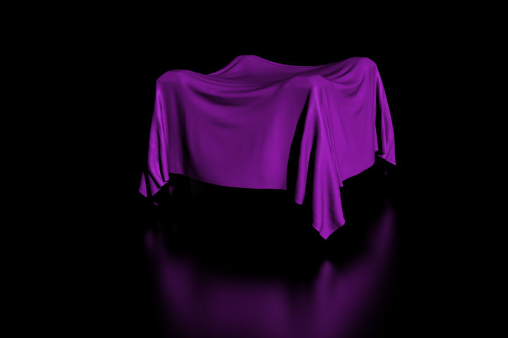

简介¶
Cloth simulation is one of the hardest aspects of CG, because it is a deceptively simple real-world item that is taken for granted, yet actually has very complex internal and environmental interactions. After years of development, Blender has a very robust cloth simulator that is used to make clothing, flags, banners, and so on. Cloth interacts with and is affected by other moving objects, the wind and other forces, as well as a general aerodynamic model, all of which is under your control.

Cloth 例子. |

Cloth on carved wooden men (made by motorsep). |

Cloth 例子. |
{kind=link}
{kind=link}
A piece of cloth is any mesh, open or enclosed, that has been designated as cloth. The Cloth panels are located in the 物理 tab and consist of three panels of options. Cloth is either an open or closed mesh and is mass-less, in that all cloth is assumed to have the same density, or mass per square unit.
Cloth is commonly modeled as a mesh grid primitive, or a cube, but can also be, for example, a teddy bear. However, Blender’s Softbody system provides better simulation of closed meshes; Cloth is a specialized simulation of fabrics.
Once the object is designated as Cloth, a Cloth modifier will be added to the object’s modifier stack automatically. As a modifier then, it can interact with other modifiers, such as Armature and Smooth. In these cases, the ultimate shape of the mesh is computed in accordance with the order of the modifier stack. For example, you should smooth the cloth after the modifier computes the shape of the cloth.
So you edit the Cloth settings in two places: use the 物理 buttons to edit the properties of the cloth and use the Modifier stack to edit the Modifier properties related to display and interaction with other modifiers.
You can Apply the cloth modifier to freeze, or lock in, the shape of the mesh at that frame, which removes the modifier. For example, you can drape a flat cloth over a table, let the simulation run, and then apply the modifier. In this sense, you are using the simulator to save yourself a lot of modeling time.
Results of the simulation are saved in a cache, so that the shape of the mesh, once calculated for a frame in an animation, does not have to be recomputed again. If changes to the simulation are made, you have full control over clearing the cache and re-running the simulation. Running the simulation for the first time is fully automatic and no baking or separate step interrupts the workflow.
Computation of the shape of the cloth at every frame is automatic and done in the background; thus you can continue working while the simulation is computed. However, it is CPU-intensive and depending on the power of your PC and the complexity of the simulation, the amount of CPU needed to compute the mesh varies, as does the lag you might notice.
Note
Do not jump ahead
If you set up a cloth simulation but Blender has not computed the shapes for the duration of the simulation, and if you jump ahead a lot of frames forward in your animation, the cloth simulator may not be able to compute or show you an accurate mesh shape for that frame, if it has not previously computed the shape for the previous frame(s).
Workflow¶
A general process for working with cloth is to:
- Model the cloth object as a general starting shape.
- Designate the object as a “cloth” in the 物理 tab of the Properties editor.
- Model other deflection objects that will interact with the cloth. Ensure the Deflection modifier is last on the modifier stack, after any other mesh deforming modifiers.
- Light the cloth and assign materials and textures, UV-unwrapping if desired.
- If desired, give the object particles, such as steam coming off the surface.
- Run the simulation and adjust Options to obtain satisfactory results. The Timeline editors VCR controls are great for this step.
- Optionally age the mesh to some point in the simulation to obtain a new default starting shape.
- Make minor edits to the mesh on a frame-by-frame basis to correct minor tears.
Tip
To avoid unstable simulation, ensure that the cloth object doesn’t penetrate any of the deflection objects or an unstable simulation will result.